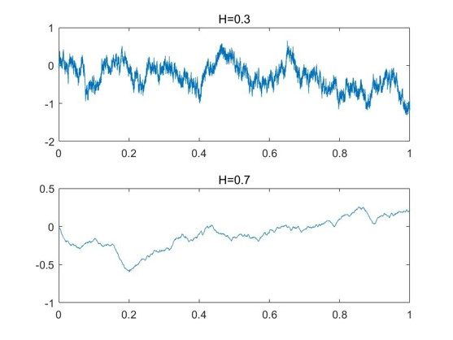
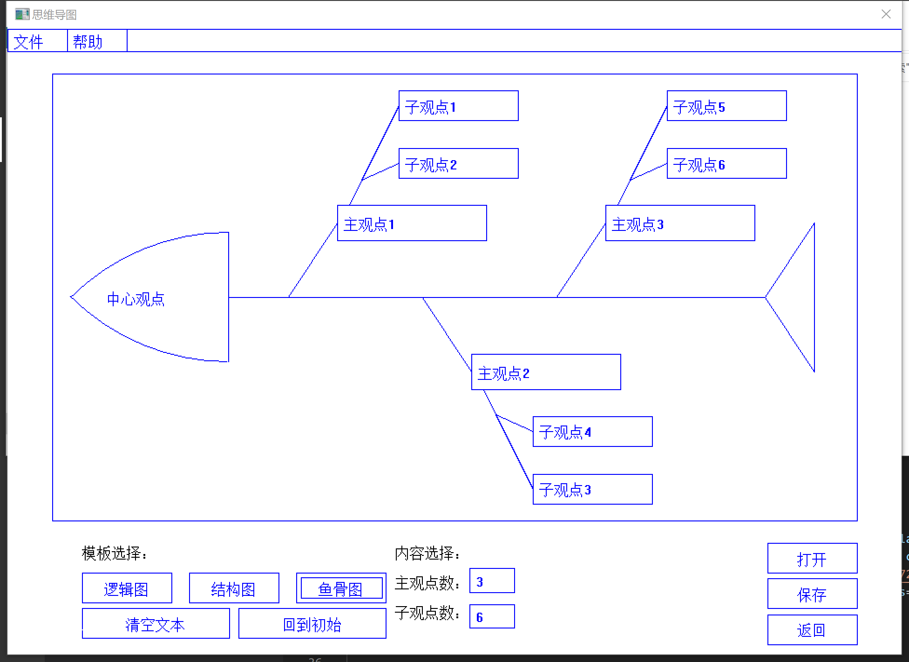

Welcome to Faye's Website!
Stay confident · Work hard · Aim high · Dream big
Greetings! I'm currently a fourth-year student at Zhejiang University, majoring in statis-tics, data science track.
I've been working on multi-factor model and big data analysis in high-performance database when intern-ing at xQuant and DolphinDB.
My research interest lies in statistical learning, database optimization, statistical compu-ting, and data analysis.
I'm passionate about data science and ready for challenges.
|  |
Analysis of the Volatility of China Financial Markets Based on the View of Hurst Statistics
Advised by Prof. Weilin Xiao, I participated in the National Statistical Modelling competition in China. We built a new statistics using MATLAB to estimate the Hurst Parameter of China's finance market. Our paper won the provincial first prize. |
|  |
A Mind Mapping Tool Built in C
A self-designed mind mapping tool built in C. I was mainly responsible for the drawing part of the graphic. |